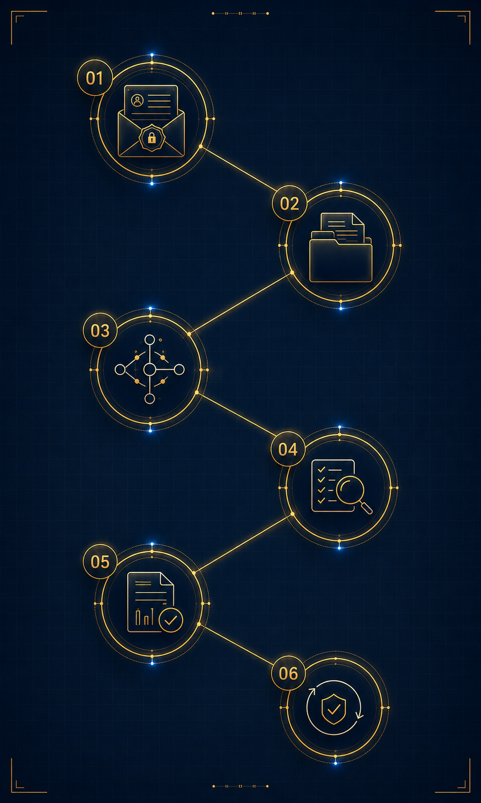

01
Konsultasi Awal
Kontak pertama digunakan untuk memahami konteks, sensitivitas, dan tujuan klien, sekaligus menilai apakah kebutuhan tersebut dapat diproses dalam batas legal dan etis.
Proses kerja Klariva dirancang untuk memberi ketenangan sekaligus kejelasan: setiap langkah dilakukan secara tertib, rahasia, dan berbasis fakta agar klien memahami apa yang dikerjakan, mengapa dilakukan, dan bagaimana hasilnya disampaikan.

Kami menjaga agar proses tetap mudah dipahami klien tanpa membuka detail operasional yang sensitif. Yang terpenting, setiap tahap memiliki tujuan yang jelas, batas yang tegas, dan keluaran yang dapat dipertanggungjawabkan.
Kontak pertama digunakan untuk memahami konteks, sensitivitas, dan tujuan klien, sekaligus menilai apakah kebutuhan tersebut dapat diproses dalam batas legal dan etis.
Setelah lingkup awal dipahami, kami menyusun gambaran masalah, kronologi, pihak terkait, sumber informasi potensial, serta risiko yang perlu diperhatikan sebelum pekerjaan berjalan lebih jauh.
Pengumpulan data, observasi, dan validasi silang dilakukan melalui metode yang sah, proporsional, dan sesuai dengan ruang lingkup yang telah disepakati.
Setiap temuan ditelaah ulang untuk memastikan konsistensi, relevansi, dan pemisahan yang jelas antara fakta, indikasi, dan interpretasi agar kesimpulan tidak melampaui data yang tersedia.
Hasil akhir dirangkum dalam format yang ringkas, aman, dan mudah ditelaah, lalu disampaikan melalui kanal yang sesuai dengan tingkat sensitivitas kasus.
Bila diperlukan, klien akan menerima arahan langkah berikutnya, batas penggunaan laporan, dan opsi konsultasi lanjutan tanpa tekanan untuk melanjutkan penugasan baru.
KLV-PROCESS / structured client journey, lawful method, secure delivery.
Apa pun jenis kasusnya, kami menjaga empat hal yang sama sejak awal: kerahasiaan klien, kepatuhan pada hukum, objektivitas dalam membaca temuan, dan dokumentasi yang tertib.
Klien tidak dihadapkan pada istilah teknis yang membingungkan. Yang kami jaga adalah kejelasan alur, ruang lingkup yang realistis, komunikasi yang aman, dan hasil yang bisa dipakai untuk penelaahan lebih lanjut.